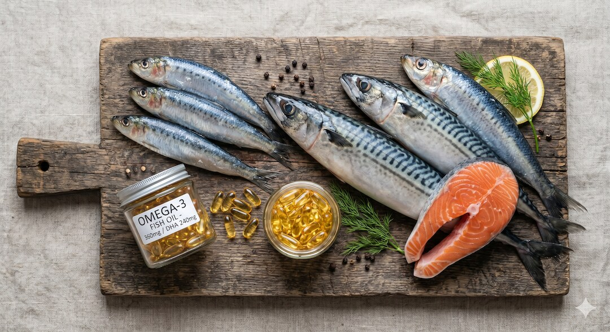
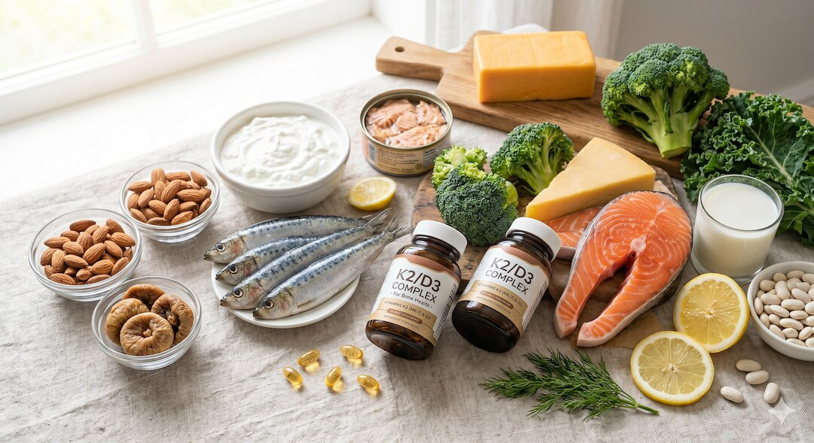
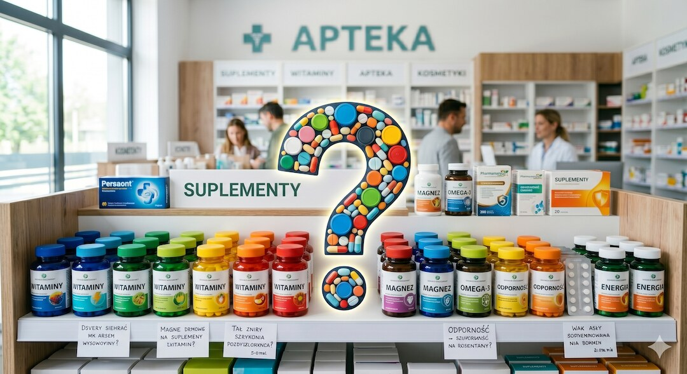
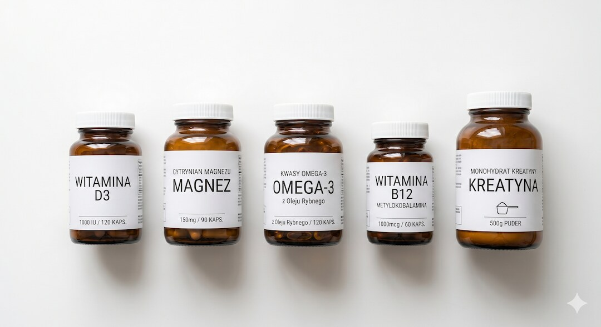

Połowa Polaków po pięćdziesiątce regularnie sięga po suplementy. Połowa z nich bierze rzeczy, które w najlepszym razie są drogie jak woda. Ale jest też druga połowa równania – kilka substancji ma za sobą solidną naukę i może realnie zmienić jakość życia w dojrzałym wieku. Zadanie jest proste: oddzielić jedno od drugiego bez owijania w bawełnę.
Szybka odpowiedź
Najkrócej: witamina D3 (2000 IU dziennie), magnez w formie glicynianu (200-400 mg), omega-3 z certyfikatem IFOS, B12 jako metylokobalamina i kreatyna monohydrat 3-5 g to pięć suplementów z najsilniejszymi dowodami naukowymi dla osób po 50-tce. Reszta popularnych suplementów – multiwitaminy, kolagen, resweratrol – nie ma potwierdzenia w dużych badaniach klinicznych.
Kluczowe wnioski
- Witamina D3, magnez, omega-3 i kreatyna mają za sobą najsilniejsze dowody naukowe i powinny być pierwszym wyborem po pięćdziesiątce – pod warunkiem odpowiedniego dawkowania.
- Większość popularnych suplementów (multiwitaminy, kolagen w tabletkach, antyoksydanty w megadawkach) nie wykazuje istotnych korzyści zdrowotnych w badaniach klinicznych i często pochłania niepotrzebne pieniądze.
- Przed suplementacją warto zbadać poziom witaminy D i B12 we krwi – to jedyne dwa niedobory, które w Polsce są statystycznie powszechne i wymagają uzupełnienia u większości starszych dorosłych.
- Jakość suplementów ma ogromne znaczenie – certyfikaty NSF, Informed-Sport lub normy farmakopei są niezbędnym minimum przy zakupie.
Czy suplementy po pięćdziesiątce to wyrzucanie pieniędzy w błoto?
To uczciwe pytanie. Globalny rynek suplementów warty jest miliardy, a znaczna jego część to produkty bez udowodnionej skuteczności, sprzedawane na fali strachu przed starzeniem. Sceptycyzm jest więc zdrowy. Jednak wrzucanie wszystkiego do jednego worka z napisem „oszustwo” byłoby równie wielkim błędem, jak bezkrytyczne połykanie kapsułek obiecujących wieczną młodość.
Australijski Instytut Sportu oraz Europejski Urząd ds. Bezpieczeństwa Żywności (EFSA) dzielą suplementy na kategorie A, B, C i D - od substancji z udowodnioną skutecznością po te szkodliwe lub zupełnie bez dowodów. Kategorię A (substancje o udowodnionym działaniu) stanowi stosunkowo krótka lista. Po pięćdziesiątce ta lista nabiera szczególnego znaczenia - bo organizm zmienia metabolizm, wchłanianie składników spada, a niedobory narastają cicho i latami. Badanie NHANES z USA pokazuje, że ponad 90% dorosłych po 50-tce ma niedobory co najmniej jednego mikroskładnika ocenianego z diety - a w Polsce sytuacja jest prawdopodobnie gorsza ze względu na niskie nasłonecznienie i ubogą w ryby dietę.
Kluczowe rozróżnienie, którego branża suplementacyjna nie chce, żebyś robił: niedobór realny wymaga uzupełnienia, brak niedoboru nie wymaga niczego. Suplementacja witaminą D osoby z jej niedoborem to medycyna. Suplementacja witaminą C osoby z prawidłowym jej poziomem to drogie placebo. Różnica jest fundamentalna i właśnie to będziemy omawiać w kolejnych sekcjach - substancja po substancji, z dowodami w ręku.
Ciekawostka ekonomiczna: gdyby każdy Polak po 50-tce suplementował tylko te substancje, co do których ma zdiagnozowany niedobór, rynek suplementów skurczyłby się o szacowane 60-70%. To tłumaczy, dlaczego branża inwestuje więcej w marketing niż w badania kliniczne - i dlaczego samodzielna weryfikacja informacji o suplementach ma tak kluczowe znaczenie.
Warto też wiedzieć, że Polska regulacja suplementów jest wyjątkowo liberalna. GIS rejestruje suplementy na podstawie deklaracji producenta, bez niezależnej weryfikacji składu. Oznacza to, że suplement na polskiej półce może zawierać mniej lub więcej substancji aktywnej niż deklaruje etykieta. Badania laboratoryjne wykazały, że część popularnych preparatów D3 zawierała od 50% do 180% deklarowanej dawki. Certyfikaty zewnętrzne jak NSF czy Informed-Sport są w Polsce szczególnie ważne właśnie z tego powodu.
Witamina D3 – dlaczego to numer jeden po pięćdziesiątce?
Witamina D3 to prohormon, który wpływa na ponad 2000 genów. Po pięćdziesiątce jej znaczenie rośnie dramatycznie: skóra produkuje ją mniej efektywnie (o 25-50%), nerki słabiej przekształcają do aktywnej formy, a ekspozycja na słońce w Polsce często jest niewystarczająca. Szacuje się, że ponad 60% Polaków ma niedobór witaminy D definiowany jako poziom 25(OH)D poniżej 30 ng/ml.
Co mówią badania? Metaanaliza z 2024 roku opublikowana w Nutrients (PMC10857599), obejmująca dane z 80 randomizowanych badań klinicznych i 82 210 uczestników, wykazała, że suplementacja witaminą D obniża ryzyko śmiertelności ze wszystkich przyczyn o 5% (OR 0,95; 95% CI: 0,91-0,99). W zakresie śmiertelności nowotworowej - metaanaliza 14 RCT z 104 727 uczestnikami wykazała 12% redukcję ryzyka zgonu z powodu raka przy codziennym dawkowaniu. Badanie VITAL (Vitamin D and Omega-3 Trial) z 25 875 uczestnikami potwierdziło też, że suplementacja D3 2000 IU dziennie pomaga utrzymać długość telomerów - biologicznych zegarów starzenia komórkowego.
Poza kośćmi - o których wszyscy wiedzą - witamina D3 wykazuje coraz lepiej udokumentowane działanie poza szkieletem: wspiera odporność (obniża ryzyko ciężkiego przebiegu infekcji dróg oddechowych), działa antydepresyjnie (metaanaliza 31 RCT z 24 189 uczestnikami wykazała, że każde dodatkowe 1000 IU D3 dziennie przynosi wymierną redukcję objawów depresji), a u kobiet po menopauzie ogranicza utratę masy kostnej. Dawkowanie: 2000 IU (50 µg) dziennie to konsensus większości towarzystw naukowych dla dorosłych po 50-tce bez udokumentowanego niedoboru. Jeśli masz stwierdzone niedobory - 4000-5000 IU pod nadzorem lekarza. Brać z tłuszczem, bo to witamina rozpuszczalna w tłuszczach.
Ciekawostka: sama witamina D bez odpowiedniej podaży magnezu nie działa prawidłowo - magnez jest kofaktorem enzymu przekształcającego D3 w aktywną formę. To jeden z powodów, dla których suplementację D3 i magnezu warto rozważać razem. Sprawdź też nasz artykuł o badaniach krwi po pięćdziesiątce, żeby wiedzieć jak monitorować poziom D3.
Praktyczna ciekawostka: w Polsce kąt padania promieni słonecznych powyżej 50 równoleżnika sprawia, że od września do marca - niezależnie od pogody - promieniowanie UVB jest zbyt słabe, by wyzwolić syntezę D3 w skórze. Nawet w słoneczny mroźny dzień w Krakowie - zero IU z ekspozycji słonecznej. Synteza zaczyna się dopiero od kwietnia. Ci, którzy noszą krem z filtrem SPF 15+ lub unikają słońca - powinni suplementować D3 przez 12 miesięcy, a nie tylko zimą.
- Dawka: 2000 IU (50 µg) D3 dziennie dla dorosłych bez niedoboru
- Brać z tłuszczem (śniadanie, kolacja) – lepsza wchłanialność
- Połączyć z suplementacją magnezu – kofaktor aktywacji D3
- Sprawdzić poziom 25(OH)D we krwi raz w roku
- Niedobór: norma 30-80 ng/ml – poniżej 20 ng/ml to kliniczny niedobór
Omega-3 – co naprawdę wiemy o rybach w kapsułce?
Omega-3 (EPA i DHA) to jedne z najlepiej przebadanych suplementów. Badanie VITAL na 26 tysiącach dorosłych po 50-tce wykazało, że u osób jedzących mało ryb ryzyko poważnych incydentów sercowych spadło o 19% przy dawce 1 g dziennie. Suplementacja ma więc sens przede wszystkim wtedy, gdy zdrowych tłuszczów brakuje na Twoim talerzu.
Gdzie dowody są mocniejsze? Triglicerydy krwi - metaanalizy konsekwentnie pokazują, że wyższe dawki EPA/DHA (2-4 g dziennie) obniżają triglicerydy o 20-30%. To klinicznie istotny efekt, szczególnie u osób z hipertriglicerydemią. Analiza z 2025 roku z badania DO-HEALTH wykazała też, że 1 g omega-3 dziennie przez 3 lata spowalniał markery biologicznego starzenia (zegary metylacji DNA) o 2,9-3,8 miesiąca. W zakresie mózgu i kognicji - metaanaliza z Nature Scientific Reports (2025) obejmująca 19 badań wskazuje, że omega-3 może poprawiać globalne funkcje poznawcze u starszych dorosłych, choć efekt jest skromny i widoczniejszy u osób z łagodnymi zaburzeniami poznawczymi niż u zdrowych.
Wnioski praktyczne po pięćdziesiątce: jeśli jesz tłuste ryby morskie 2-3 razy w tygodniu - możesz odpuścić suplement. Jeśli ryb nie jesz prawie wcale (jak większość Polaków) - 1-2 g EPA+DHA dziennie to rozsądna strategia. Ważne: omega-3 w olejach rybich utleniają się szybko. Sprawdź datę ważności, przechowuj w lodówce i kupuj produkty z certyfikatem IFOS potwierdzającym czystość i świeżość.
Szokująca ciekawostka: do 50% suplementów omega-3 na rynku przekracza dopuszczalne normy utlenienia (wskaźnik TOTOX) - co oznacza, że zjełczały olej zamiast chronić przed stanem zapalnym, może go nasilać. Tani olej rybny z dyskontów bywa dosłownie zjełczały zanim trafi na Twój stół. To jeden z najsilniejszych argumentów za wybieraniem marek z niezależnymi certyfikatami i za przechowywaniem kapsułek w lodówce po otwarciu.
Rozróżnienie EPA vs DHA ma znaczenie praktyczne. EPA wykazuje silniejsze działanie przeciwzapalne i przeciwdepresyjne. DHA dominuje w mózgu i siatkówce oka. Dla osób po 50-tce szukających wsparcia dla serca i mózgu jednocześnie - warto wybierać preparaty z proporcją EPA:DHA bliską 2:1. Sprawdź też, czy suplement zawiera omega-3 w formie triglicerydowej (lepsza wchłanialność o ok. 70%) czy estrowej (tańsza produkcja, gorsza biodostępność).

Magnez – czy to naprawdę najważniejszy minerał po 50-tce?
Magnez uczestniczy w ponad 300 reakcjach enzymatycznych w ludzkim organizmie. Po pięćdziesiątce wchłanianie magnezu z jelit spada, wydalanie przez nerki rośnie, a leki powszechnie stosowane w tym wieku dodatkowo obniżają jego poziom. Około 60-70% dorosłych Polaków spożywa mniej magnezu niż zalecane 310-420 mg dziennie.
Co mówią badania? Metaanaliza 19 prospektywnych badań kohortowych z 1 168 756 uczestnikami wykazała, że wyższe spożycie magnezu wiąże się ze zmniejszoną śmiertelnością ze wszystkich przyczyn. Metaanaliza 2024 roku (Nutrients) potwierdza, że magnez jest kluczowym czynnikiem ograniczającym fizjologiczny spadek związany z wiekiem przez działanie na wiele szlaków jednocześnie. W zakresie nadciśnienia - inna metaanaliza wykazała, że suplementacja magnezem istotnie obniża ciśnienie krwi u osób z nadciśnieniem, z efektem porównywalnym lub przewyższającym niektóre leki. W zakresie snu - badania wskazują na poprawę jakości snu u starszych dorosłych z niedoborem magnezu.
Forma ma znaczenie - i to znaczenie dramatyczne. Tlenek magnezu (najtańszy, najczęstszy w Polsce) ma biodostępność poniżej 4% - to niemal niezabsorbowany minerał, który głównie działa jak łagodny środek przeczyszczający. Magnez cytrynian osiąga 28-30% biodostępności. Magnez glicynian (bisglicynian) - najlepsza opcja przy wrażliwym żołądku i jeden z najlepiej przyswajalnych. Magnez L-treonian (Magtein) - jedyna forma wykazująca w badaniach zdolność przekraczania bariery krew-mózg, najciekawsza pod kątem kognicji, ale droższa. Przegląd kliniczny z 2025 roku (PMC11562224) potwierdza, że suplementacja magnezem, witaminy D i witamin z grupy B poprawia funkcje poznawcze u osób z łagodnymi zaburzeniami poznawczymi. Dawka: 200-400 mg elementarnego magnezu dziennie, najlepiej wieczorem - wspomaga relaksację i sen.
Praktyczna wskazówka dla aktywnych fizycznie po pięćdziesiątce: intensywne ćwiczenia znacząco zwiększają utratę magnezu przez pot i mocz - szacuje się, że regularnie trenujące osoby dorosłe mogą tracić 10-20% więcej magnezu niż siedzące. Jeśli ćwiczysz 3-5 razy w tygodniu, dolna granica suplementacji (200 mg) może być niewystarczająca - rozważ 300-400 mg, szczególnie w dniach treningowych. Magnez wspomaga też syntezę białek mięśniowych i ma działanie synergistyczne z kreatyną, która omówiona jest w naszym artykule o kreatynie po pięćdziesiątce.
- Tlenek magnezu: biodostępność poniżej 4% – unikaj, kupujesz środek przeczyszczający
- Cytrynian magnezu: dobra wchłanialność, niedrogi, dobry wybór na start
- Glicynian/bisglicynian: najlepszy przy problemach trawiennych
- L-treonian (Magtein): jedyna forma przekraczająca barierę krew-mózg
- Dawka: 200-400 mg magnezu elementarnego, wieczorem
Witamina K2 i wapń – co naprawdę buduje kości po pięćdziesiątce?
Większość osób po pięćdziesiątce, szczególnie kobiety po menopauzie, słyszy zalecenie: pij wapń. Niestety, sama suplementacja wapniem bez witaminy K2 bywa potencjalnie szkodliwa – wapń może trafiać do naczyń krwionośnych zamiast do kości. Metaanaliza w British Medical Journal wykazała, że takie działanie wiąże się z wyższym ryzykiem incydentów sercowo-naczyniowych u kobiet.
Witamina K2 (menachinon, szczególnie forma MK-7) kieruje wapń z krwi do kości przez aktywację osteokalcyny i białka MGP. Badanie z Japonii z farmakologiczną dawką MK-4 wykazało 60% redukcję ryzyka złamań kręgów i 77% redukcję ryzyka złamań szyjki kości udowej u kobiet po menopauzie z osteoporozą. Badania z MK-7 w mniejszych dawkach (180-360 µg dziennie) dają pozytywne wyniki w zakresie gęstości mineralnej kości, choć efekty są skromniejsze. Ważne zastrzeżenie: K2 wchodzi w interakcję z lekami przeciwzakrzepowymi (warfaryna, acenokumarol) - jeśli je przyjmujesz, konsultacja lekarska przed suplementacją jest obowiązkowa.
Co z wapniem? Priorytetem powinna być dieta - 2-3 porcje nabiału lub zielonych liściastych warzyw dziennie pokrywają zapotrzebowanie większości dorosłych. Jeśli dieta jest uboga, suplementacja 500-600 mg wapnia dziennie (nie więcej!) z jedzeniem i zawsze razem z K2 i D3 ma sens. Powyżej 1000-1200 mg suplementowanego wapnia dziennie ryzyko kamicy nerkowej i problemów sercowo-naczyniowych rośnie. Więcej nie znaczy lepiej. Polecamy też przeczytać nasz artykuł o treningu siłowym po pięćdziesiątce - naciski mechaniczne na kości generowane przez ćwiczenia oporowe są równie ważne jak żywienie.

Witamina B12 i folian – dlaczego po pięćdziesiątce wchłaniasz je coraz gorzej?
Witamina B12 jest wyjątkowa, ponieważ jej wchłanianie z jedzenia wymaga prawidłowej funkcji żołądka. Po pięćdziesiątce produkcja kwasu solnego często spada, a popularne leki na refluks dodatkowo ją blokują. W efekcie, nawet przy diecie bogatej w B12, przyswajanie bywa drastycznie upośledzone. To niedobór, który warto kontrolować u każdej osoby po 50-tce.
Konsekwencje niedoboru B12: neuropatia obwodowa (drętwienie rąk i nóg), niedokrwistość megaloblastyczna, zaburzenia pamięci i kognicji - i jest to niedobór podstępny, bo narastający przez lata bez wyraźnych objawów. Przegląd z 2025 roku (PMC11562224) potwierdza, że witaminy z grupy B - w tym B12 i folian - poprawiają funkcje poznawcze u osób z łagodnymi zaburzeniami. Szczególnie istotne jest skojarzone działanie B12, B6 i folianu w obniżaniu homocysteiny - aminokwasu, którego podwyższony poziom jest niezależnym czynnikiem ryzyka chorób sercowo-naczyniowych i demencji.
Forma ma znaczenie: cyjanokobalamina (najtańsza, najczęstsza) wymaga przekształcenia przez wątrobę. Metylokobalamina jest formą aktywną - szczególnie wskazaną dla osób z mutacją genu MTHFR, która dotyczy około 10-15% populacji i upośledza metabolizm witamin z grupy B. Dawkowanie B12 po pięćdziesiątce: 250-1000 µg metylokobalaminy dziennie. Optymalne stężenie B12 we krwi to 500-900 pg/ml - nie tylko powyżej dolnej normy laboratoryjnej. Wegetarianie i weganie po 50-tce: suplementacja B12 jest absolutnie obowiązkowa, bez wyjątków. Więcej o optymalnej diecie po pięćdziesiątce znajdziesz w naszym przewodniku żywieniowym.
Ciekawostka o homocysteinie: to mało znany, a bardzo istotny czynnik ryzyka dla mózgu i serca. Podwyższona homocysteina (powyżej 15 µmol/l) wiąże się z dwukrotnie wyższym ryzykiem demencji i 1,5-krotnie wyższym ryzykiem zawału. Zbijają ją przede wszystkim B12, B6 i folian we właściwych formach. Warto to sprawdzić przy okazji badań krwi - koszt badania homocysteiny to około 30-50 zł w laboratorium.
Ciekawostka o witaminie B6 i bezpieczeństwie dawkowania: suplementacja B6 powyżej 50-100 mg dziennie (przy długotrwałym stosowaniu nawet od 10 mg/dzień) może paradoksalnie powodować neuropatię obwodową - ten sam objaw co przy jej niedoborze. To jeden z niewielu suplementów, gdzie zdecydowanie więcej oznacza gorzej. Trzymaj się dawek bliskich RDA: 1,7 mg/dzień dla mężczyzn i 1,5 mg/dzień dla kobiet po 51-tce. Suplementy z B-complex zawierające 50-100 mg B6 w jednej tabletce to potencjalne zagrożenie przy długotrwałym stosowaniu.
- Poziom B12 warto zbadać raz w roku po 50-tce – koszt kilkudziesięciu złotych
- Optymalne stężenie B12 we krwi: 500-900 pg/ml – nie tylko powyżej dolnej normy
- Metylokobalamina to lepsza forma niż cyjanokobalamina – szczególnie przy MTHFR
- Inhibitory pompy protonowej (Omeprazol, Pantoprazol) blokują wchłanianie B12
- Weganie: suplementacja B12 jest absolutnie obowiązkowa – brak alternatywy
Które popularne suplementy NIE działają i dlaczego nadal się sprzedają?
Czas na niewesoły rozdział. Żeby mówić uczciwie o suplementach, trzeba powiedzieć też o tych, na które co roku wydajemy miliardy złotych bez naukowego uzasadnienia. Nie zawsze dlatego, że producenci kłamią - ale dlatego, że marketing wyprzedził naukę o dekady i nikt nie poczuwa się do wyjaśnienia dysonansu konsumentom.
Multiwitaminy - wielkie rozczarowanie nauki. Największe badanie dotyczące multiwitamin - Physicians Health Study II - objęło 14 641 lekarzy przez 11 lat obserwacji. Wynik: brak istotnego wpływu multiwitamin na ryzyko zawału, udaru, raka lub śmiertelności ogólnej. Badanie VITAL potwierdziło: codzienna multiwitamina nie chroni serca. Dla osoby z prawidłową dietą to drogie placebo - nerki wydalają z moczem znaczną część przyjętych witamin. Wyjątek: multiwitaminy mogą mieć sens przy bardzo ubogiej diecie, po operacjach bariatrycznych lub przy konkretnych niedoborach - ale wtedy lepiej suplementować konkretne substancje zamiast drogiego koktajlu ze symbolicznymi dawkami wszystkiego.
Kolagen w tabletkach i proszku - popularność tych produktów jest odwrotnie proporcjonalna do dowodów na ich skuteczność. Kolagen spożywany doustnie jest rozkładany przez układ trawienny do aminokwasów (głównie glicyna i prolina), które nie trafiają preferencyjnie do skóry ani stawów. Kilka badań pokazuje skromną poprawę nawilżenia skóry przy kolagenie hydrolizowanym, ale jakość metodologiczna tych badań jest niska. Szokująca ciekawostka: domowy wywar z kości gotowanej kilka godzin z warzywami to naturalny, bogaty w peptydy kolagenowe suplement, który kosztuje ułamek ceny pudełka proszku z apteki.
Antyoksydanty w megadawkach - przez lata teoria głosiła: więcej antyoksydantów równa się mniej wolnych rodników, równa się wolniejsze starzenie. Badanie SELECT wykazało, że suplementacja selenem i witaminą E u mężczyzn zwiększała ryzyko raka prostaty o 17%. Badanie CARET pokazało, że beta-karoten w suplementach zwiększał ryzyko raka płuc u palaczy o 18%. Diametralne odwrócenie intuicji. Antyoksydanty z pożywienia działają zupełnie inaczej niż wyizolowane w kapsułce - kontekstu fitochemicznego żywności nie da się zastąpić suplementem. Więcej na temat zdrowej diety przeczytasz w naszym artykule o diecie po pięćdziesiątce.
Jeszcze jedno popularne rozczarowanie: resweratrol. Sprzedawany jako esencja długowieczności z czerwonego wina, z odwołaniem do badań na myszach. Problem: badania na ludziach konsekwentnie przynoszą rozczarowujące wyniki - brak wpływu na śmiertelność, markery stanu zapalnego czy długość życia. Biodostępność doustnego resweratrolu u ludzi jest bardzo niska. Resweratrol pozostaje interesującą cząsteczką do badań laboratoryjnych - nie do suplementacji. A jego sława pochodzi głównie z inwestycji venture capital w firmy longevity, nie z klinicznych dowodów skuteczności na ludziach.

TOP 5 suplementów po 50-tce – co wybrać, ile brać i czemu?
Opierając się na sile dowodów naukowych, powszechności niedoborów u Polaków po 50-tce i stosunku korzyści do ryzyka - oto pięć suplementów z największym uzasadnieniem w dojrzałym wieku. To nie jest lista must-have dla każdego - to lista startowa do rozmowy z lekarzem i weryfikacji przez badania krwi.
Miejsce pierwsze: Witamina D3 z K2. Dawka 2000-4000 IU D3 dziennie przez cały rok w Polsce, zawsze z witaminą K2 w formie MK-7 (100-200 µg) dla ochrony naczyń i kości jednocześnie. Sprawdź poziom 25(OH)D we krwi przed suplementacją i po 3 miesiącach. Cel: 40-60 ng/ml. Koszt dobrego produktu D3+K2: 25-50 zł miesięcznie.
Miejsce drugie: Magnez w dobrej formie. 200-400 mg glicynianu lub cytrynianu dziennie, wieczorem - wspomaga sen, relaksację mięśni, pracę serca i regulację ciśnienia. Unikaj tlenku magnezu jak ognia. Koszt: 15-30 zł miesięcznie. Miejsce trzecie: Omega-3 EPA+DHA. Tylko jeśli nie jesz tłustych ryb 2-3 razy w tygodniu. Certyfikat IFOS lub Informed-Sport obowiązkowo. Przechowywać w lodówce. Dawka: 1-2 g EPA+DHA dziennie. Koszt dobrego produktu: 40-70 zł miesięcznie.
Miejsce czwarte: Witamina B12 w formie metylokobalaminy. Szczególnie dla wegan, wegetarian i osób przyjmujących inhibitory pompy protonowej lub metforminę. Dawka: 250-1000 µg dziennie. Zbadaj poziom B12 przed i po 3 miesiącach. Miejsce piąte: Kreatyna monohydrat. Jedyna substancja z grupy A Australijskiego Instytutu Sportu z udowodnionym działaniem na siłę i masę mięśniową u starszych dorosłych. Szczegóły w naszym kompletnym przewodniku po kreatynie po pięćdziesiątce. Dawka: 3-5 g monohydratu dziennie, z posiłkiem, bez przerw.
- D3 + K2: 2000-4000 IU D3 i 100-200 µg MK-7 przez cały rok w Polsce
- Magnez: 200-400 mg glicynianu lub cytrynianu wieczorem
- Omega-3: 1-2 g EPA+DHA tylko jeżeli nie jesz ryb 2-3x/tydzień
- B12: 250-1000 µg metylokobalaminy – obowiązek dla wegan i użytkowników IPP
- Kreatyna: 3-5 g monohydratu dziennie – z treningiem siłowym daje najlepsze efekty

Jak kupować suplementy mądrzej – na co patrzeć, czego unikać?
Kupowanie suplementów w Polsce przypomina nawigowanie po dzikim zachodzie - bo suplementy diety, w odróżnieniu od leków, nie przechodzą kontroli skuteczności przed wejściem na rynek. Wystarczy dopełnienie formalności rejestracyjnych w Głównym Inspektoracie Sanitarnym i produkt ląduje na półce apteki obok leków z prawdziwego zdarzenia. To stwarza ogromne pole do nadużyć.
Na co patrzeć? Po pierwsze - certyfikaty niezależnej weryfikacji. NSF Certified for Sport, Informed-Sport, USP Verified i IFOS (dla omega-3) to organizacje, które niezależnie testują produkty pod kątem zawartości deklarowanej substancji, zanieczyszczeń metalami ciężkimi, pestycydami i substancjami dopingowymi. To nie gwarancja skuteczności - to gwarancja, że w kapsułce jest to, co na etykiecie, w deklarowanej ilości. Po drugie - forma substancji. Tlenek magnezu to inne zwierzę niż glicynian magnezu. Cyjanokobalamina to nie to samo co metylokobalamina. Kwas foliowy to nie to samo co metylofolian (5-MTHF) dla osób z mutacją MTHFR.
Po trzecie - dawkowanie. Sprawdź, ile substancji aktywnej jest w jednej kapsułce i porównaj z dawkami stosowanymi w badaniach klinicznych. Produkt z 50 IU witaminy D3 to reklama, nie suplementacja. Po czwarte - bądź podejrzliwy wobec suplementów z wieloma składnikami w jednym. Im dłuższa lista składników, tym trudniej ocenić, czy poszczególne substancje są w dawkach terapeutycznych, czy symbolicznych. Pięć składników w jednej kapsułce po 100 mg każdego to zazwyczaj marketing, nie biochemia.
Ile wydawać? Rozsądna suplementacja TOP 5 z certyfikowanymi produktami kosztuje 100-190 zł miesięcznie. To mniej niż jedna wizyta u specjalisty i ułamek kosztów leczenia chorób, którym może zapobiegać. Ale drogie nie zawsze znaczy dobre - niektóre budżetowe marki z certyfikatami biją jakościowo droższe produkty bez certyfikatów. Sprawdź Labdoor.com lub ConsumerLab.com - niezależne serwisy porównujące jakość suplementów dostępnych online.
Kiedy suplementy nie wystarczają – granica między suplementem a lekiem?
Suplementy po 50-tce mają sens wyłącznie jako uzupełnienie, a nie terapia. Istnieje wyraźna granica, przy której powinna zacząć się rozmowa z lekarzem. Witamina D i K2 przy osteoporozie to wsparcie, ale nie zastąpią leków. Przy zdiagnozowanej depresji witaminy nie zastępują psychoterapii. Z kolei ciężki niedobór B12 często wymaga zastrzyków domięśniowych zamiast tabletek.
Interakcje suplementów z lekami są realne i mogą być niebezpieczne: witamina K2 z warfaryną (antagonizm - K2 może osłabiać działanie leku), omega-3 z lekami przeciwzakrzepowymi (addytywne działanie - zwiększa ryzyko krwawień), magnez z niektórymi antybiotykami (chelacja - suplement obniża wchłanianie antybiotyku), dziurawiec z wieloma lekami (indukcja enzymów wątrobowych). Lekarz prowadzący powinien wiedzieć o każdym suplemencie, który regularnie przyjmujesz - i to nie jest prośba, to zalecenie bezpieczeństwa.
Podsumowując bez owijania w bawełnę: suplementy to nie mit i nie panaceum. Kilka substancji ma za sobą solidną naukę i uzasadnione miejsce w codziennej rutynie osoby po pięćdziesiątce. Większość produktów na rynku to drogi szum. Klucz do mądrego podejścia to weryfikacja badaniami krwi, wybór sprawdzonych form i certyfikowanych produktów, realistyczne oczekiwania i otwarty dialog z lekarzem. Pamiętaj też: żadna kapsułka nie zastąpi 7 godzin snu, regularnego ruchu i warzyw na talerzu. Suplementy są ostatnią warstwą zdrowego stylu życia, nie pierwszą. Sprawdź też nasz artykuł o badaniach profilaktycznych po pięćdziesiątce, które pozwolą Ci wiedzieć, co rzeczywiście suplementować.
Najczęściej zadawane pytania
Jaki suplement jest najważniejszy po 50-tce?
Witamina D3 ma najszersze zastosowanie i najsilniejsze dowody dla osób po 50-tce w Polsce – niedobór dotyczy ponad 60% populacji, a suplementacja 2000 IU dziennie wiąże się z redukcją śmiertelności ogólnej i nowotworowej w metaanalizach. Tuż za nią plasują się magnez i witamina B12 dla osób z grupy ryzyka.
Czy multiwitaminy mają sens po 50-tce?
Dla osoby z prawidłową dietą – nie. Physicians Health Study II (14 641 lekarzy, 11 lat) wykazało brak wpływu multiwitamin na ryzyko chorób serca, raka i śmiertelność. Lepiej zbadać konkretne niedobory i uzupełnić je celowo, niż kupować drogi koktajl z symbolicznymi dawkami wszystkiego.
Czy suplementy omega-3 chronią serce po 50-tce?
Nie tak prosto. Badanie VITAL (26 000 uczestników) nie wykazało ogólnej redukcji ryzyka sercowo-naczyniowego przy 1 g omega-3 dziennie. Jednak u osób rzadko jedzących ryby redukcja ryzyka wyniosła 19%. Omega-3 skutecznie obniżają triglicerydy o 20-30%. Sens suplementacji zależy od diety i profilu lipidowego.
Ile kosztuje rozsądna suplementacja po 50-tce miesięcznie?
TOP 5 suplementów z certyfikowanymi produktami: D3+K2 (25-50 zł/mies.), magnez (15-30 zł), omega-3 (40-70 zł), B12 (15-25 zł), kreatyna (20-35 zł). Razem: 115-210 zł miesięcznie. To mniej niż jedna wizyta u specjalisty.
Kiedy zacząć brać suplementy po 50-tce?
Najlepiej po podstawowych badaniach krwi: poziom D3 (25-OHD), B12, morfologia, lipidogram, TSH. Wyniki określają, co rzeczywiście jest potrzebne. Sama pięćdziesiątka nie jest automatycznym wskazaniem, ale statystycznie większość osób w Polsce po 50-tce ma co najmniej niedobór witaminy D.
Czy suplementy kolagenu działają na stawy i skórę po 50-tce?
Dowody są słabe. Kolagen po strawieniu rozkłada się do aminokwasów, które nie trafiają preferencyjnie do skóry ani stawów. Kilka badań z kolagenem hydrolizowanym pokazuje skromną poprawę, ale jakość metodologiczna jest niska. Domowy wywar z kości osiąga podobny efekt bez drogich suplementów.
Źródła
- Pludowski i wsp. Nutrients 2024: witamina D dawka 2000 IU - dowody na redukcje smiertelnosci (80 RCT, 82 210 uczestnikow) PMC10857599
- PMC11562224 2025: suplementy zywieniowe w zdrowym starzeniu - przeglad sarkopenii, snu i kognicji
- NHLBI 2024: VITAL - omega-3 a serce, wnioski z 26 000 uczestnikow po 50-tce
- GlobalRPH 2025: The Truth About Vitamins - co badania naukowe mowia o suplementach w 2025
- Jinfiniti 2025: 15 najlepszych suplementow longevity - ranking wedlug sily dowodow
- Nature Scientific Reports 2025: metaanaliza omega-3 i funkcje poznawcze u starszych doroslych
- PMC12433974 2025: magnez i witamina D ko-suplementacja - wplyw na stan zapalny i lipidy
- PMC12352333: metaanaliza witaminy D i depresji - 31 RCT, 24 189 uczestnikow, dawka-odpowiedz
- Altitudemedicine 2025: TOP suplementy dla zdrowia - D3, omega-3, DO-HEALTH starzenie biologiczne
- PMC5768078 Nutrients 2018: magnez - rola w 300 reakcjach enzymatycznych, cisnienie, metabolizm
Uwaga: Artykuł ma charakter informacyjny i edukacyjny. Nie zastępuje konsultacji lekarskiej, diagnozy ani leczenia.